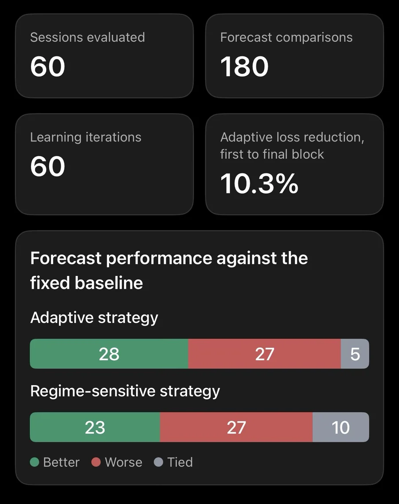
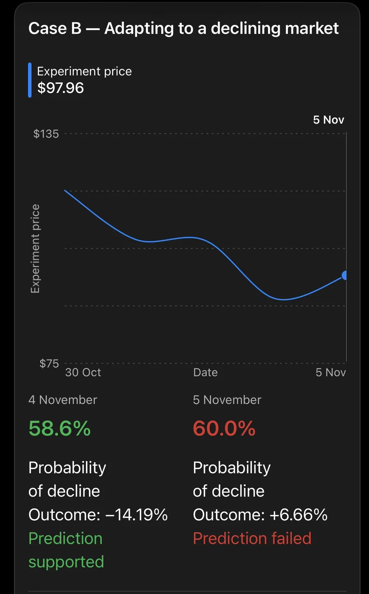
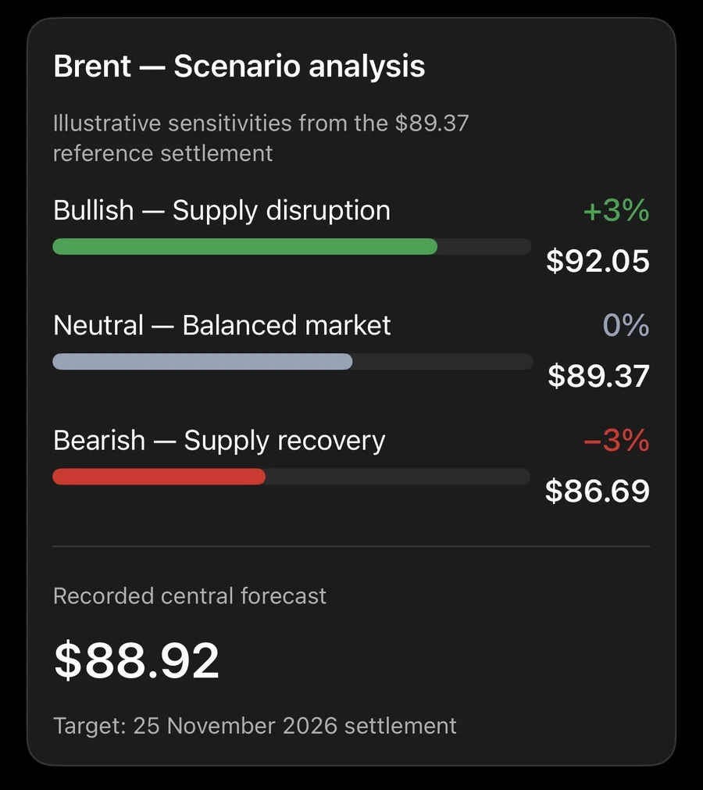

Blog / AI agents and learning / Intelligence That Compounds
Adapting is not improving
A learning algorithm run over 60 trading sessions, what it learned, whether it improved, and why it was not promoted
Part 1 described the reference architecture and how it was built, mostly by conversation. This part reports what the implemented experiment has actually shown: whether a system that adapts from its own outcomes also improves, and what its governance decided when the two turned out not to be the same. Part 3 takes up what that means for practice and for organisations.
Three kinds of statement run through it, and each is labelled. Implemented means running and tested. Designed means part of the reference architecture, not yet running. Findings are what the implemented experiment measured, with the limits of how it was measured.
What is implemented, and what is not
Implemented and tested: seven weeks of scheduled market watch that included Brent, in a broader monitoring workflow; Supabase as persistent empirical memory; Notion as reflective memory, research discussion and governance; a 60-session sequential learning experiment, in which a learning algorithm ran over historical Brent market observations, session by session, comparing three forecasting strategies; sequential probability updates from observed outcomes; scoring, daily reflections, hypothesis records and strategy comparison; and evidence-based rejection of strategies that did not improve.
Designed, not yet implemented: Firecrawl research acquisition; the full ten-table database, of which seven tables exist, five for the live pilot and two for the learning experiments; scheduled, unattended execution of the engines; forecasting and strategy refinement driven by news and the model; and prospective champion and challenger testing.
So the experiment demonstrates the mechanics of a governed learning loop. It is not a fully autonomous, self-improving investment agent, and its results are not investment performance.
Where the experiment came from: seven weeks of market watch
The Brent experiment did not start from a blank page. It grew out of a broader market-monitoring workflow I already run, and that workflow had been watching Brent for weeks before any of the work in this series began.
Brent was added to the workflow's watchlist on 8 October 2026, and scheduled market analysis covering it continued through 24 November. On 13 November the monitoring was split in two: an opportunity watch and an early-crisis watch, with different objectives, shared risk controls, and a person's approval required before anything was acted on.
Those weeks taught several lessons that went straight into the Brent design: keep early warnings apart from opportunity signals; record a confidence and the conditions that would prove a view wrong; separate forecasts from outcomes; count false alarms and missed opportunities, not only successes; preserve the evidence; and require approval before a strategy changes.
They also exposed the gap this series is about. The scheduled commentary did not reliably become scored forecast records. Weeks of analysis had been produced, but very little of it had been recorded in a form that could later be checked against what actually happened. A manual test of saving forecasts was run on 23 November; automated recording and scoring of the monitoring's views has not yet been verified. Seven weeks of watching had produced memory of a kind, but almost nothing to learn from.
The 60-session experiment below is the response to that lesson. It tests a narrow mechanism, statistical adaptation from scored outcomes, in a setting where every forecast is recorded and every outcome is scored. Its results are kept separate from the monitoring workflow; they say nothing about the accuracy of the weeks of live analysis, and nothing about investment returns. The broader loop, in which a language model learns from news-driven forecasts, remains the proposed extension.
How we will know
The Brier score is the primary measure because it rewards honest confidence: a forecast of 80% that turns out wrong scores 0.64, while always saying 50% scores 0.25.1 An agent that is often confidently wrong does worse than one that admits uncertainty.
Three comparisons matter, all on the same future dates: the learning agent against the no-change forecast, which any skill must beat; against the fixed V1 forecast, which shows whether learning added anything; and each challenger against the strategy it would replace. Because every test runs forward on dates that did not exist when it began, this is walk-forward evaluation, the standard defence against strategies that merely fit the past.1
Eight to twelve weeks of prospective forecasts gives a first dataset, not a verdict. Loaded history gives context, not experience: an agent's genuine record begins with its first forecast made before the outcome existed. That prospective test is designed, not yet running. What has been run is a 60-session experiment on recorded market data, and it already tests the part of the loop that matters most.
The experiment: sequential learning over 60 trading sessions
What was run. A learning algorithm was executed over 60 trading sessions of historical market observations, the EIA Brent spot price from 25 August to 17 November 2026, one session at a time, in order.2 Nothing about the learning was simulated. Before each session's outcome was read, three strategies each stated a probability that the price would rise; the outcome was then read, every forecast was scored, and the adaptive strategies updated. In all: 60 evaluation sessions, three strategies, 180 probability comparisons and 60 outcome-driven reflections.
| Strategy | How it forms its probability |
|---|---|
| Fixed baseline | Always 50% |
| Adaptive | The share of rises seen so far, starting from no prior view and updated after every outcome |
| Regime-sensitive | The same, but counted separately after up days and after down days |
After each outcome, every forecast was scored with the Brier score, the adaptive strategies updated their counts, and the next session began. Supabase held the records; Notion held the dashboard, the journal, the hypotheses and the strategy register.
What it was not. It was not a simulated agent, and it was not a live deployment. The experiment was executed on 24 November 2026 over historical price inputs in sequential order, so it is not 60 days, or 12 weeks, of live operation. Nor was it a news-driven test of the model's judgement. It used prices only; no news was collected for the period, and no language-model forecasts were made. It also assumed that each day's price was available immediately, which the published series is not, it did not reconstruct what was actually known on each historical date, and the price inputs have not yet been independently re-checked against the source. The experiment's own records say so: do not present as executable backtest. What it does test is the machinery: whether memory changes behaviour, whether evaluation can tell change from improvement, and whether governance acts on the difference.
![The agent's dashboard for the 60-session experiment: Brent spot price from late August to 17 November 2026, rising from about $88 to above $130 and falling back to about $93; below it, cumulative Brier loss for the adaptive strategy in teal and the regime-sensitive strategy in amber, both settling slightly above the dashed fixed baseline at 0.25; overall Brier scores fixed 0.2500, adaptive 0.2618, regime 0.2688; and the note that neither adaptive strategy beats the baseline overall, with no promotion and no trading returns claimed.](img/compounds/replay-dashboard.webp)
What it found.

Session by session, the adaptive strategy beat the fixed baseline 28 times, did worse 27 times and tied 5 times. The regime-sensitive strategy beat it 23 times, did worse 27 times and tied 10 times. By block of 20 sessions, measured as mean Brier loss:
| Sessions | Adaptive | Regime-sensitive | Fixed baseline |
|---|---|---|---|
| 1 to 20 | 0.2774 | 0.2577 | 0.2500 |
| 21 to 40 | 0.2593 | 0.2966 | 0.2500 |
| 41 to 60 | 0.2487 | 0.2521 | 0.2500 |
| All 60 | 0.2618 | 0.2688 | 0.2500 |
The adaptive strategy's loss fell by 10.3% between the first and the last block, and it moved steadily closer to the baseline: 9 sessions better and 9 worse in the first 20, 10 better and 8 worse in the last 20, where its loss of 0.2487 was 0.5% below the baseline's. Across the whole period, though, its loss was 4.7% higher than simply saying 50% every day, and the regime-sensitive strategy's was 7.5% higher.

When learning worked, and when it failed. The most instructive moments are consecutive sessions in which a successful forecast was immediately followed by a failure.
Case A: learning a rising trend. In September, Brent rallied hard. By 10 September the regime-sensitive strategy had counted a run of rises and put the chance of another at 77.8%. Brent rose 10.47%, its best single result: a loss of 0.05 against the baseline's 0.25. The next day it raised its confidence to 80%. Brent fell 2.41%, and that one forecast cost 0.64. The adaptive strategy did the same a few days later: 68.8% and right on 15 September, 70.6% and wrong on 16 September. The lesson: accumulated evidence can improve trend recognition, and also build excessive confidence just before a reversal.

Case B: adapting to a declining market. In early November the market turned down. On 4 November the regime-sensitive strategy put the chance of a fall at 58.6%, and Brent fell 14.19%. On 5 November it raised that to 60%, and Brent rebounded 6.66%. The lesson: the strategy adapted to falling prices, but stayed vulnerable to a sudden rebound.

Underneath both cases is the same mechanism. With few outcomes counted, the strategies' probabilities swung widely, from 25% to 80%, and confident forecasts that turned out wrong were punished hard. As outcomes accumulated, the adaptive strategy's probabilities settled in the mid-40s, close to the baseline's 50%, and its losses settled close to the baseline's too. Part of its improvement is the market changing; part is becoming less confidently wrong. Neither is the same as becoming better than a coin. These are selected examples, chosen to show the mechanism, not independent tests of it.
Memory, evaluation and governance. The experiment produced 60 outcome-driven reflections in the Notion learning journal, one per session. They were generated algorithmically from each session's stored result, not by 60 separate runs of a language model reasoning about each day; the journal says so at the top. A typical entry:
![Notion page extract: Learning Journal, 60 outcome-driven reflections. Note: retrospective, mechanically derived reflections from stored statistical results, not historical LLM reasoning. Session 11, 9 September 2026: before outcome adaptive P(up) 66.7%, regime 75.0%; realised 3.19%; adaptive loss 0.1111 versus 0.2500 baseline; beat baseline; next adaptive probability 69.2%. Session 12, 10 September: adaptive 69.2%, regime 77.8%; realised 10.47%; loss 0.0947; beat baseline; next 71.4%. Session 13, 11 September: adaptive 71.4%, regime 80.0%; realised minus 2.41%; loss 0.5102 versus 0.2500; underperformed baseline, confidence was misplaced; next 66.7%.](img/compounds/notion-journal.webp)
Two distinctions matter here. The first is between simulating an agent and executing a learning algorithm: this experiment did the second, so the forecasts, updates and scores are real computations over real observations, not a story about what an agent might have done. The second is between statistical learning and model reflection: the learning here is deterministic, counts updated by arithmetic, and the journal is a record of it, not independent reasoning. Model-generated reflection, of the kind Part 1 designs for, is a separate capability that has not yet been tested.
Evaluation then did its job, and governance acted on it. The adaptive strategy was not promoted but stays under test; the regime-sensitive strategy was not promoted; and the next experiment, a confidence-adjusted strategy that pulls probabilities towards 50%, follows directly from Cases A and B:

And the hypotheses that came out of it:
![Notion page extract: Hypotheses and Experiments. H01, accumulated directional frequency beats fixed probability, 0.2618 versus 0.2500, not supported. H02, prior direction improves forecast, 0.2688 versus 0.2500, not supported. H03, shrinkage reduces overconfidence, not tested, proposed. H04, physical supply evidence improves probability forecasts, news not integrated, proposed. Prospective protocol: freeze candidate and baseline, use same cutoff and instrument, minimum 30 paired observations, compare Brier and coverage, require human approval; no claims of statistical significance.](img/compounds/notion-hypotheses.webp)
The protocol for testing them was written down before any test: freeze the candidate and the baseline, use the same cutoff and the same instrument, at least 30 paired future observations, compare Brier score and coverage, require human approval, and make no claims of statistical significance.
Why this is the interesting result. It would have been easy to report the 10.3% and stop. The architecture would not let that happen. Memory enabled adaptation: the strategy changed its behaviour as experience accumulated. Evaluation established that the change was not yet improvement: against a fixed baseline, on the same days, it lost. Governance decided that it should not be adopted, and the next idea, less confidence rather than more cleverness, follows directly from what the evidence showed. Learning, measurable improvement and authorisation to change behaviour are three different things, and a system that collapses them into one will promote its luckiest guesses.
Put another way: learning is not simply the accumulation of experience. It is the ability to measure whether experience improves decisions, and to reject the adaptations that do not.
The first live forecast
Alongside the 60-session experiment, the pilot recorded its first live forecasts on 24 November: one made by the model using the first strategy as written, and the no-change baseline. There is no adaptive live forecast yet, and neither forecast has been scored. This is what it published.
![Screenshot of the Brent intelligence terminal for 24 November 2026: reference settlement $89.37 for the January 2027 futures contract on 23 November; forecast settlement $88.92 for 25 November, minus 0.50%; probability of upside 43%, labelled judgmental and uncalibrated; a chart of the FRED spot series from 11 to 17 November, labelled as a separate series that is stale for scoring; and an evidence balance listing recovering supply, a Libya pipeline restart and an unconfirmed inventory build as bearish drivers, against Hormuz logistics risk, physical supply vulnerability and reported backwardation as bullish counterweights.](img/compounds/terminal.webp)
Several details are worth reading closely, because they show the design doing its job.
It chose a precise target, and kept the stale one at arm's length. The forecast is scored against the settlement of a named contract, ICE Brent January 2027 futures: $89.37 on 23 November, forecast at $88.92 for 25 November, a fall of 0.50%. Naming the contract matters, because ICE's January contract stops trading on the last business day of November and a later contract then becomes the front month.3 The FRED spot series still appears, but as a separate chart labelled stale for scored spot forecast: the agent itself recognised the publication delay that Part 1 identified as the design's most important flaw.
It is honest about its confidence. The probability of a rise is 43%, labelled judgmental, uncalibrated. That is the right label for a first forecast: there is no record yet against which to calibrate it. The Brier score will make the stakes concrete. If Brent falls, the forecast scores 0.43², about 0.18; if it rises, 0.57², about 0.32. A plain 50% scores 0.25 either way, so this forecast beats a coin only if its lean turns out to be right.
It separates fact from expectation. The evidence balance lists bearish drivers against bullish counterweights, and marks the expected inventory build as unconfirmed. The footer says what the forecast is not: research only, no trade execution, and pending independent verification of the settlement, because the reference price came from news reporting rather than an official feed.
It still shows how subtle the timing is. The forecast was frozen at 14:30 UTC on 24 November, but it is measured from the 23 November settlement, so most of a trading day had already happened before the freeze. Some of the move it forecasts may already have been visible. The cleaner version measures from the first settlement after the freeze, the one on 24 November. This is exactly the kind of thing the weekly review exists to catch, and a good argument for having one.

Alongside the forecast, the Scenario and Risk Monitor page shows what plus or minus 3% would mean, and keeps a risk register with a control for each risk: match the January 2027 settlement exactly, against contract mismatch; search for contradictory evidence, against narrative bias; preserve retrieval and observation dates, against publication delay; score probabilities with the Brier score, against overconfidence; and freeze forecasts before the target date, against lookahead. The scenarios are clearly marked as sensitivities, not extra forecasts, which keeps the record honest: one forecast, one score.
The live pilot's Learning Laboratory also records a first research hypothesis from the live analysis, that physical supply recovery may outweigh geopolitical headlines when export flows improve, as proposed, untested and not acted on: on day one, the learning loop is a commitment, not a result.
Next: what it means
The experiment demonstrates the mechanics of a governed learning loop on one market, with one narrow mechanism. Part 3 asks what those mechanics mean in practice, who should own each kind of learning, and what would change if the loop learned from an organisation's own decisions instead of oil prices.
Sources
- Wikipedia, Brier score and Walk forward optimization.
- U.S. Energy Information Administration, Europe Brent Spot Price FOB, accessed November 2026; republished by FRED as DCOILBRENTEU, the series used in the 60-session experiment.
- ICE, Brent Crude Futures, contract specification, accessed November 2026.